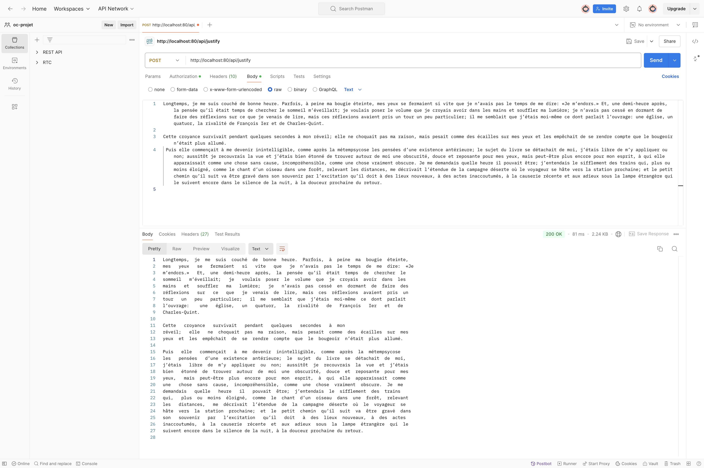
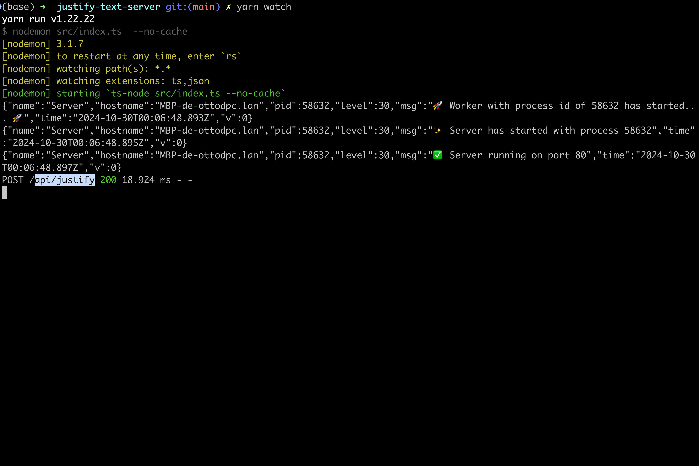
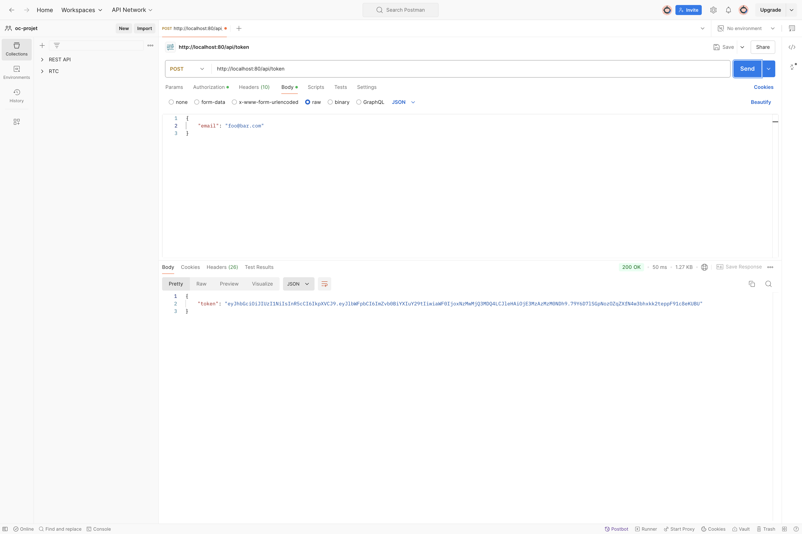
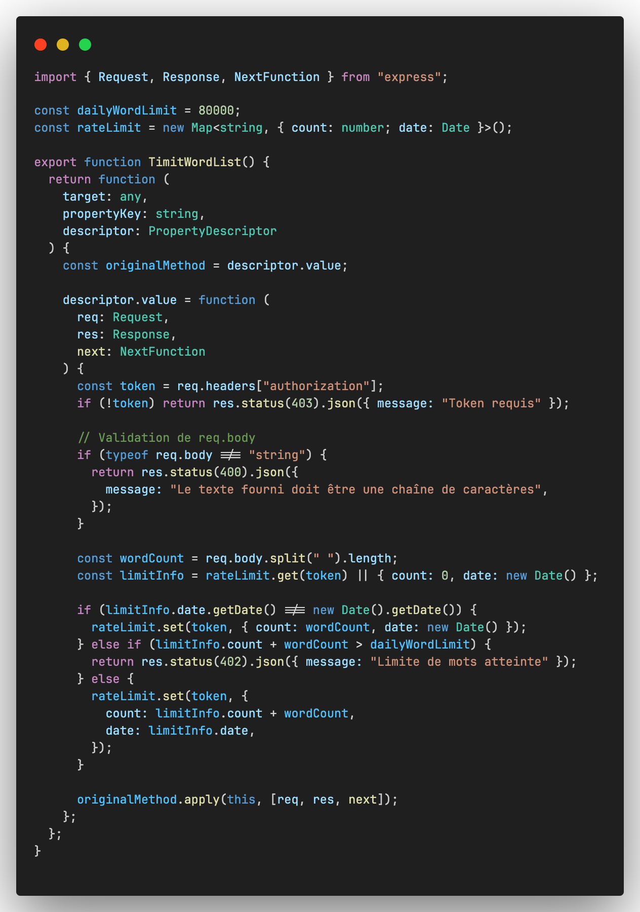
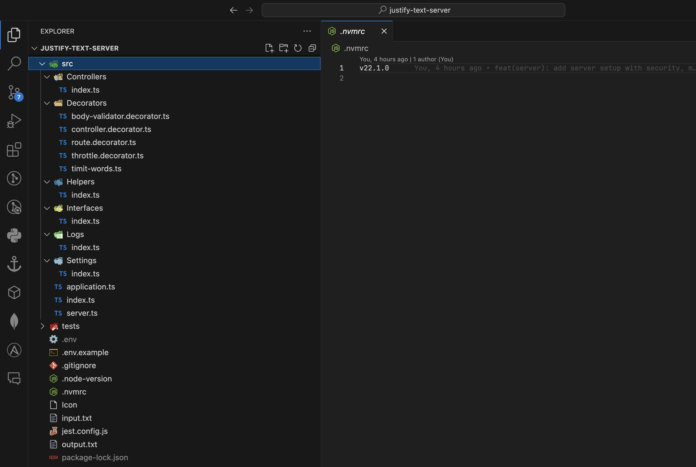

Remarque : Ce projet a été conçu avec une approche modulaire. Consultez le dossier
imgpour des exemples de requêtes et de réponses dans Postman.
Justification API est une API RESTful construite avec Node.js et TypeScript, dédiée à la justification de texte en ligne de 80 caractères. Ce projet intègre des concepts avancés tels que l'authentification par token, la gestion de la limite de mots quotidienne par utilisateur et des pratiques de Programmation Orientée Objet (OOP) avec l'utilisation de décorateurs pour une architecture plus maintenable et modulable.

Le code source est disponible sur GitHub : https://github.com/ottodpc/justify-text-server
Cloner le dépôt :
git clone https://github.com/ottodpc/justify-text-server.git
cd justify-text-server
Installer les dépendances :
yarn install
Compiler le code TypeScript :
yarn build
Démarrer le serveur :
yarn start
.env en utilisant le modèle .env.example :cp .env.example .env
.env pour le token JWT :SECRET_KEY="VOTRE_SECRET_KEY"
L'API offre deux principaux endpoints :
/api/token : Pour obtenir un token d’authentification./api/justify : Pour justifier un texte avec des lignes de 80 caractères.Le dossier img contient des captures d'écran illustrant les tests Postman et le terminal lors des requêtes :

POSTapplication/json{
"email": "foo@bar.com"
}
{
"token": "TOKEN"
}
POSTtext/plainAuthorization: Bearer <votre_token>Exemple de requête Postman : 
Le texte est justifié sans l'utilisation de bibliothèques externes pour la mise en forme. Les mots sont répartis uniformément sur des lignes de 80 caractères, ajoutant des espaces pour un alignement parfait. Des exemples sont fournis dans input.txt et output.txt pour illustrer la justification.
Ce projet utilise une architecture modulaire, mettant en avant plusieurs concepts avancés en Programmation Orientée Objet (OOP) et en développement backend.
Les décorateurs sont utilisés pour améliorer la lisibilité et la modularité du code. Par exemple :
@POST : Décorateur pour définir une méthode comme une route POST.TimitWordList : Middleware pour limiter le nombre de mots quotidiens autorisés par token.TimeWordList, qui gère les limites quotidiennes des mots par token utilisateur.
Une gestion d'erreurs centralisée est implémentée pour capturer toutes les erreurs et retourner des réponses cohérentes au client.
Utilisation de bibliothèques comme Helmet et Rate Limit pour sécuriser l'application contre les attaques courantes.
Le code est organisé de manière modulaire pour permettre une meilleure maintenabilité. Voici une capture de l’architecture du projet dans Visual Studio Code :

justify-text-server/
├── .env.example
├── img/
│ ├── justify/
│ │ ├── TERMINAL.png
│ │ └── POSTMAN.png
│ ├── token/
│ │ ├── TERMINAL.png
│ │ └── POSTMAN.png
│ └── decorators/
│ └── TimeWorList-Decorator.png
├── src/
│ ├── Controllers/
│ │ └── index.ts
│ ├── Decorators/
│ │ ├── body-validator.decorator.ts
│ │ ├── controller.decorator.ts
│ │ ├── route.decorator.ts
│ │ ├── throttle.decorator.ts
│ │ └── timit-words.ts
│ ├── Helpers/
│ │ └── index.ts
│ ├── Interfaces/
│ ├── Logs/
│ ├── Settings/
│ │ └── index.ts
│ ├── application.ts
│ ├── index.ts
│ └── server.ts
├── tests/
├── input.txt
├── output.txt
├── jest.config.js
├── package.json
├── README.md
├── tsconfig.json
└── yarn.lock
TimeWordList, validation)./api/token./api/justify, en incluant le token généré dans l’en-tête de la requête.